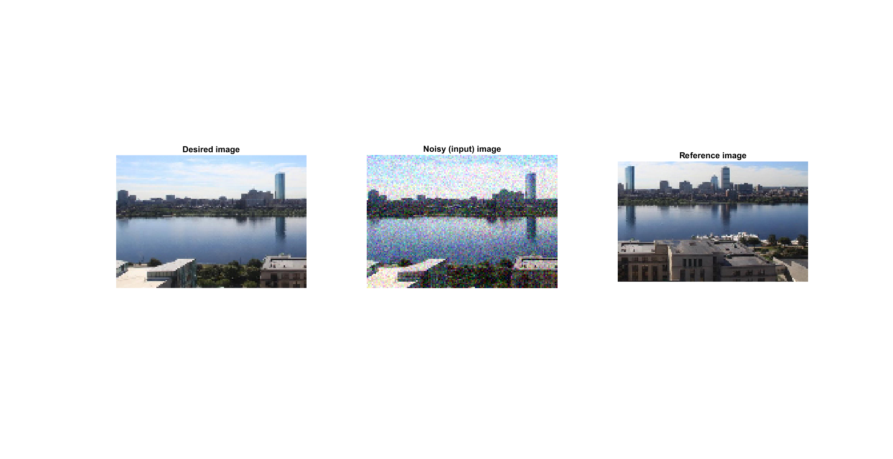
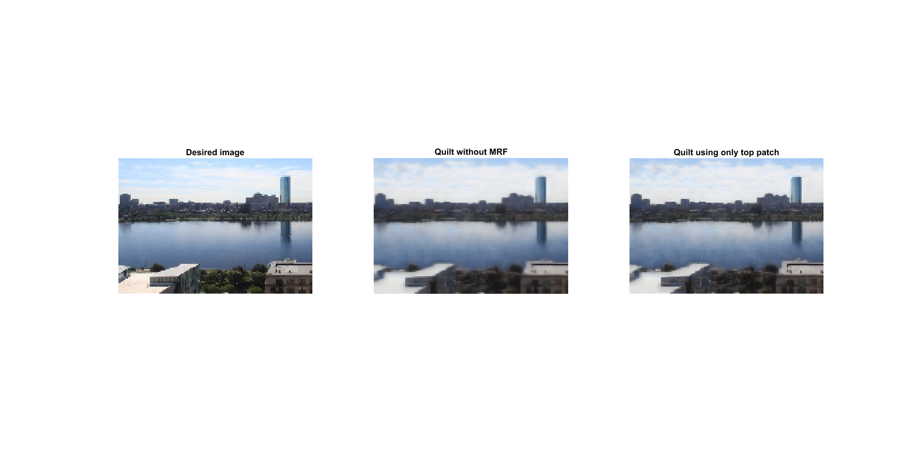
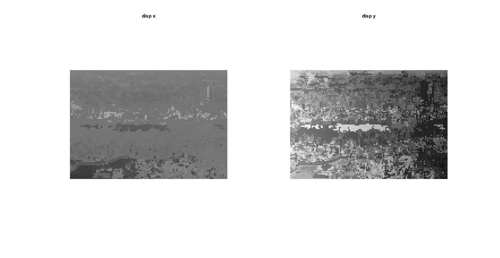
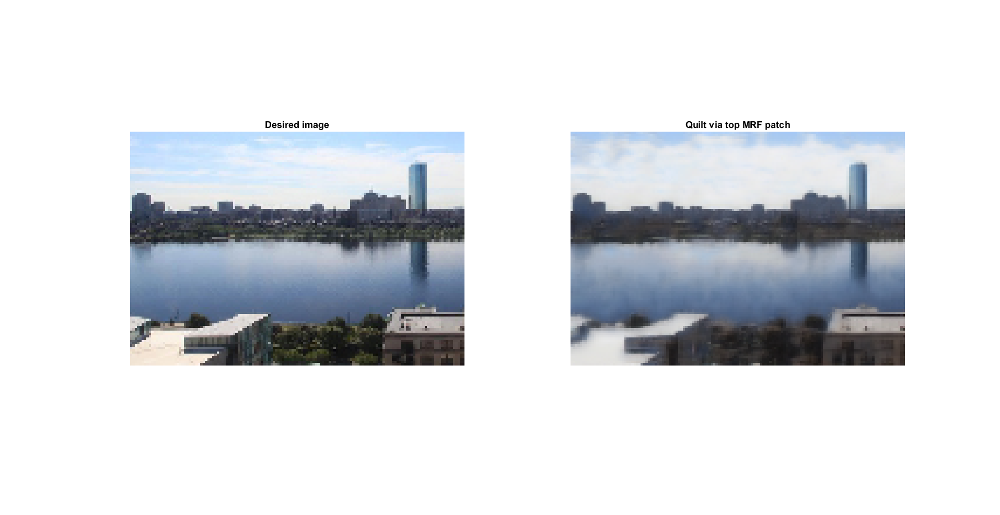
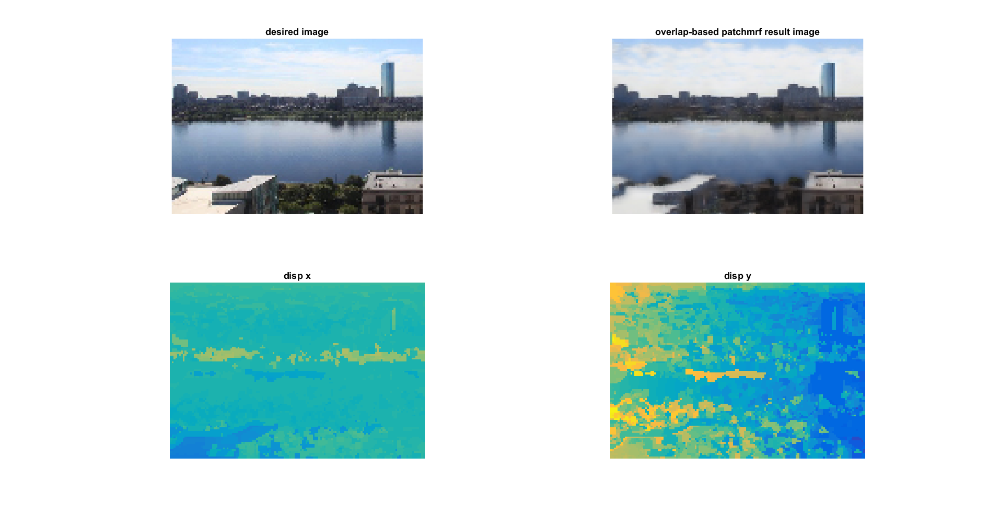
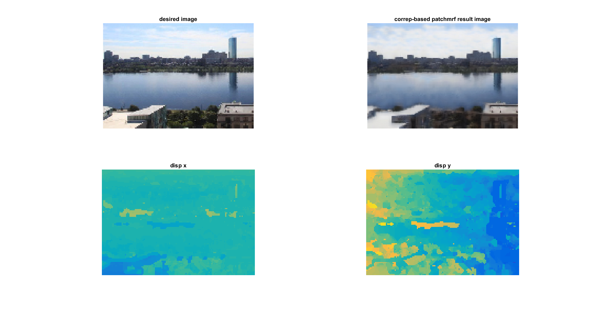

example Patch MRF
run this code with >> publish('example_patchmrf', 'outputDir', 'doc/examples/example_patchmrf');
This file demonstrates the use of patchmrf() in patchlib.
TODO: do some more serious example where you learn from a second image especially medical images where can use location
Contents
Setup
decide on tests
testids = [1, 2]; % get parameters noisestd = 0.1; patchSize = [5, 5, 3]; [desiredim, noisyim, refim] = example_prepareData('boston-blue-m', noisestd); clim = [-max(size(refim)), max(size(refim))]; % visualize the data patchview.figure(); subplot(1, 3, 1); imshow(desiredim); title('Desired image'); subplot(1, 3, 2); imshow(noisyim); title('Noisy (input) image'); subplot(1, 3, 3); imshow(refim); title('Reference image'); drawnow;
Data loaded
knnsearch
perform a knn search for mrf patches in noisyim by using im as reference. extract patches in a [nPatches x V] matrix, where V == prod(patchSize)
[patches, pDst, pIdx, ~, srcgridsize, refgridsize] = ... patchlib.volknnsearch(noisyim, refim, patchSize, 'sliding', 'K', 10); resimg = patchlib.quilt(patches, srcgridsize, patchSize, 'sliding'); resimg1 = patchlib.quilt(patches(:,:,1), srcgridsize, patchSize); % visualize caf; patchview.figure(); subplot(1, 3, 1); imshow(desiredim); title('Desired image'); subplot(1, 3, 2); imshow(resimg); title('Quilt without MRF'); subplot(1, 3, 3); imshow(resimg1); title('Quilt using only top patch'); drawnow; % visualize the displacement of the top patch disp1 = patchlib.corresp2disp(srcgridsize, refgridsize, pIdx(:, 1), 'reshape', true); patchview.figure(); subplot(1, 2, 1); imagesc(disp1{1}, clim); title('disp x'); colormap gray; axis off; axis equal; subplot(1, 2, 2); imagesc(disp1{2}, clim); title('disp y'); axis off; axis equal; drawnow;
lib2patches: lib 1 of 1 
MRF on voxel intensities
run a patch MRF using default parameters
qpatches = patchlib.patchmrf(patches, srcgridsize, pDst); % quilt using the top resulting patch resmrfimg = patchlib.quilt(qpatches, srcgridsize, patchSize, 'sliding'); % visualize caf; patchview.figure(); subplot(1, 2, 1); imshow(desiredim); title('Desired image'); subplot(1, 2, 2); imshow(resmrfimg); title('Quilt via top MRF patch');
Warning: Using Default sliding overlap
MRF on voxel intensities - tuned parameters
% run an mrf on overlap [qp, ~, ~, ~, pi] = patchlib.patchmrf(patches, srcgridsize, pDst, patchSize , ... 'lambda_node', 0.1, 'lambda_edge', 100, 'pIdx', pIdx, 'refgridsize', refgridsize); disp2 = patchlib.corresp2disp(srcgridsize, refgridsize, pi, 'reshape', true); resimg2 = patchlib.quilt(qp, srcgridsize, patchSize); caf; patchview.figure(); subplot(2, 2, 1); imshow(desiredim); title('desired image'); subplot(2, 2, 2); imshow(resimg2); title('overlap-based patchmrf result image'); subplot(2, 2, 3); imagesc(disp2{1}, clim); title('disp x'); axis off; axis equal; subplot(2, 2, 4); imagesc(disp2{2}, clim); title('disp y'); axis off; axis equal;
Warning: Using Default sliding overlap
MRF on correspondances
this encourages nearby patches to come from nearby locations/displacements.
usemex = exist('pdist2mex', 'file') == 3; edgefn = @(a1,a2,a3,a4) patchlib.correspdst(a1, a2, a3, a4, [], usemex); [qp, ~, ~, ~, pi] = patchlib.patchmrf(patches, srcgridsize, pDst, patchSize , 'edgeDst', edgefn, ... 'lambda_node', 0.1, 'lambda_edge', 100, 'pIdx', pIdx, 'refgridsize', refgridsize); disp3 = patchlib.corresp2disp(srcgridsize, refgridsize, pi, 'reshape', true); resimg3 = patchlib.quilt(qp, srcgridsize, patchSize); caf; patchview.figure(); subplot(2, 2, 1); imshow(desiredim); title('desired image'); subplot(2, 2, 2); imshow(resimg3); title('correp-based patchmrf result image'); subplot(2, 2, 3); imagesc(disp3{1}); title('disp x'); caxis(clim); axis off; axis equal; subplot(2, 2, 4); imagesc(disp3{2}); title('disp y'); caxis(clim); axis off; axis equal;
Warning: Using Default sliding overlap
MRF using Mean Field Inference.
run an mrf on overlap, using meanfield
[qp, ~, ~, ~, pi] = patchlib.patchmrf(patches, srcgridsize, pDst, patchSize , ... 'lambda_node', 0.1, 'lambda_edge', 100, 'pIdx', pIdx, 'refgridsize', refgridsize, ... 'infer_method', @UGM_Infer_MeanField); disp4 = patchlib.corresp2disp(srcgridsize, refgridsize, pi, 'reshape', true); resimg4 = patchlib.quilt(qp, srcgridsize, patchSize); caf; patchview.figure(); subplot(2, 2, 1); imshow(desiredim); title('desired image'); subplot(2, 2, 2); imshow(resimg4); title('overlap-based patchmrf result image w/ mf'); subplot(2, 2, 3); imagesc(disp4{1}); title('disp x'); caxis(clim); axis off; axis equal; subplot(2, 2, 4); imagesc(disp4{2}); title('disp y'); caxis(clim); axis off; axis equal;
Warning: Using Default sliding overlap